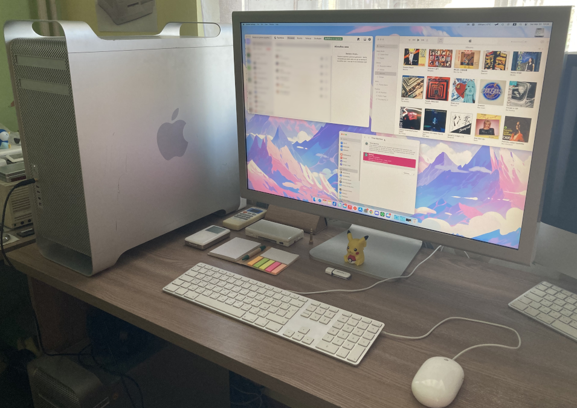

|  | CPU: 2x Quad-Core Intel Xeon E5462 2.8 GHzMemory: 16 GB of 800 MHz FB-DIMM DDR2 RAMStorage: 500 GB Crucial MX500 + 250 GB Vertabim SSDGPU: AMD Radeon RX 580 Sapphire Nitro+ 8 GBCondition: Working perfectly |
I got this machine for cheap without a GPU. I bought one online from a 5,1 Mac Pro. It currently dual-boots Lion and High Sierra. It's still a very capable machine and I use it occasionally.
Although not my first Intel Mac, this was my first true experience with Intel Mac OS as I tried to actively use it and still do since it's pretty fast. I've had Snow Leopard, Lion, Mountain Lion, High Sierra and Big Sur installed (the last ran a bit too slow for my taste).
Update - Upgraded SSD from 128 to 256 GB
24/10/23 - Upgraded RAM from stock 6 to 16 GB
17/11/23 - Finally put a proper mini 6-pin to 6-pin cable for the GPU
27/01/24 - Installed a second E5462 CPU, as it originally had only one
19/02/24 - Replaced the HD 5770 with a Radeon RX 580 and added a second SSD (Crucial MX 500). Updated the OS to Sonoma and it runs really nicely.